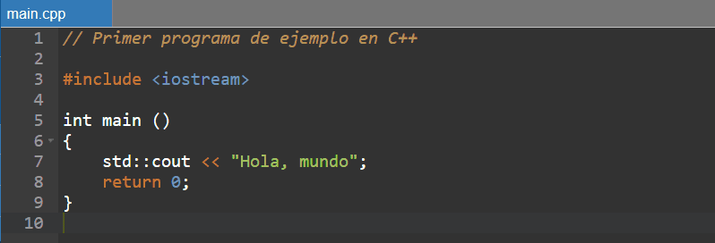
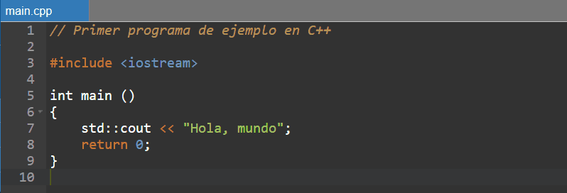

La naturaleza compilada de C++ lo distingue inmediatamente de lenguajes interpretados como Python. Este proceso de compilación, aunque más lento en la fase de desarrollo, produce código máquina optimizado que se ejecuta con una velocidad difícil de igualar. El lenguaje funciona como un puente entre el hardware y abstracciones de alto nivel, permitiendo desde manipulación directa de memoria hasta programación orientada a objetos con todas sus características avanzadas. La Standard Template Library (STL) representa uno de los mayores tesoros de C++, proporcionando un arsenal de contenedores, algoritmos e iteradores que han sido optimizados durante décadas. Esta biblioteca, combinada con el sistema de plantillas, permite crear código genérico altamente eficiente. A diferencia de lenguajes más modernos, C++ exige una comprensión profunda de conceptos como punteros, referencias y gestión manual de memoria, características que aunque complejas, ofrecen un grado de control inigualable.Tipos de Datos
El sistema de tipos en C++ es rico y estático, requiriendo declaraciones explícitas que permiten al compilador realizar optimizaciones agresivas. Desde tipos fundamentales como int y double hasta estructuras complejas definidas por el usuario, cada variable tiene un tipo bien definido en tiempo de compilación. Los templates introducen un nivel de abstracción adicional, permitiendo escribir código genérico sin sacrificar rendimiento. Las estructuras de datos en C++ van desde simples arrays en la pila hasta complejas estructuras en el heap gestionadas manualmente. La STL ofrece implementaciones optimizadas de vectores, mapas, conjuntos y otras estructuras fundamentales, mientras que el lenguaje mismo proporciona las herramientas para crear estructuras personalizadas cuando se requiera máximo control sobre el diseño de memoria.Ventajas
La principal virtud de C++ reside en su capacidad para exprimir hasta la última gota de rendimiento del hardware. Este lenguaje domina ámbitos donde los microsegundos cuentan: motores de videojuegos, sistemas de trading de alta frecuencia, software embebido y componentes críticos de sistemas operativos. Su capacidad para interactuar directamente con el hardware lo hace indispensable en el desarrollo de drivers y sistemas en tiempo real. La portabilidad es otra de sus grandes ventajas. Un código C++ bien escrito puede compilarse en prácticamente cualquier arquitectura, desde supercomputadoras hasta microcontroladores. Esta versatilidad, combinada con décadas de código legacy escrito en C/C++, asegura su relevancia continua en la industria.Desventajas
El poder de C++ viene acompañado de una curva de aprendizaje empinada. Conceptos como manejo manual de memoria, herencia múltiple y template metaprogramming requieren tiempo y experiencia para dominarse completamente. La ausencia de un recolector de basura significa que los desarrolladores deben ser meticulosos en la gestión de recursos, abriendo la puerta a bugs difíciles como memory leaks y dangling pointers. La sintaxis de C++, heredada de C pero ampliada con numerosas características, puede resultar verbosa y críptica para principiantes. Operaciones que en lenguajes modernos se resuelven con una línea pueden requerir docenas en C++, aunque esta aparente desventaja suele traducirse en un control más fino sobre el comportamiento del programa.
.png) La forma de escribir un hola mundo en C++ es: 
La forma de escribir un hola mundo en C++ es: 